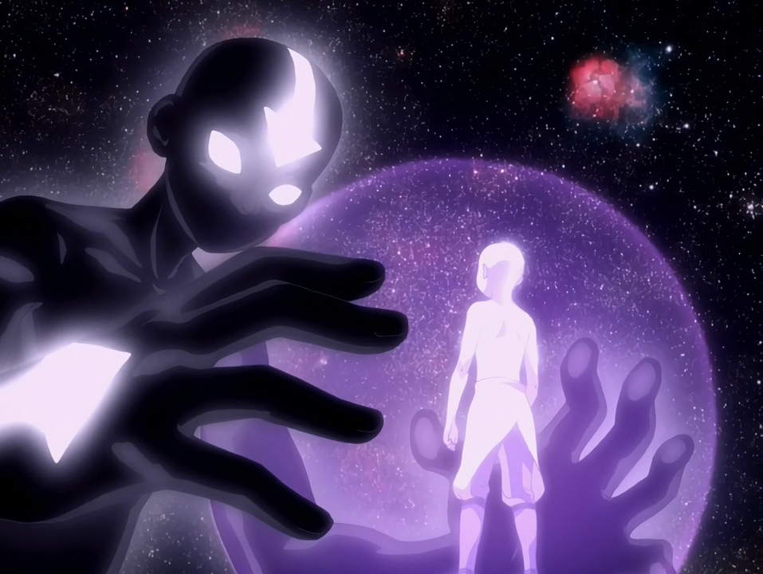
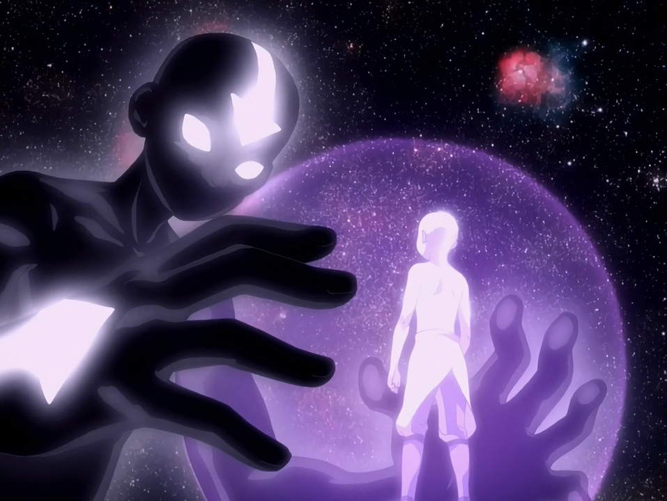

blank
The Strike of a Ferocious Tigress
blank
About eight years ago I went to Indonesia with a group of my silat school. We stayed there for a couple of weeks, and in those weeks we trained everyday. The lessons with our big group and the group from the school there, started each day the same. We greet each other. Then everybody had to sit down, close their eyes and listen to the teacher, who was saying the Satria Muda Indonesia (SMI) promise out loud. And then the lesson will start.
Of course the first few days were all about getting to know each other and trying to understand what the teacher meant with his jurus1 and lessons. He showed the movement once or twice and then let us practice it. He didn’t correct us, walked around and was looking at how we’re moving. At some point he did start to correct me, explaining what the movement all was about. And after a couple of days me and my training-partner had to train two times a day. While the others only could train in the evening with the rest. That went on until the day we had to get back to the Netherlands.
For me, this short period in which I got to learn so much techniques worked out very well. I enjoyed the way of teaching. But when I think back, it didn’t work out so well for the rest. He didn’t criticise their techniques as must as he did with me and my training-partner. He let them practice the same jurus over and over again. And at some point some people of our group started to ‘miss’ classes. Which is, in my eyes, disrespectful towards the teacher. So when they did came back to train, he was following the promise of SMI: you will follow the training with discipline & the knowledge gained will only be taught back to those who are entitled. So he didn’t teach them but let his assistant help them. In his eyes they were not entitled to learn his techniques, because of the lack of respect and discipline. But from their perspective it’s understandable, in their eyes the teacher didn’t pay enough attention to them.
I tried his way of teaching here in the Netherlands with some of the children/students I teach, and have seen that sometimes the same thing happens as in Indonesia. The children/students did not have a ‘goal’ to train too. It made me realise that both views/mindsets have their flaws. What flaws? The students are thrown in the deep by the teacher. Which is okay, if there is clear guidance. But he expects that the students find the answers to their questions by practicing the movement x amount of times. While students think they are doing the exercise correct, because they don’t get critique on the way they perform, the teacher doesn’t find them ready enough to continue to the next step/technique. That’s why in Asia it could take years even decades to obtain the black belt. I think it is okay if you “find the answers” by practicing non-stop, but at some point you do need to get guidance on what you are doing. (It should be taught in such a way that it’s useful in all things.) 2
So how can we combine those two mindsets as one, in a way that works best for you? Not only for training a martial art or other sport, but more importantly for your daily life and especially for your work as a designer/artist. That in the end this mindset is repeated so many times (subconsciously & consciously), like the movements, you’ll have balanced your mind. We master the technical aspects of an art form only by learning the rules and the ways that people have done things in the past. It takes a great deal of flexibility of mind to then question these rules, to push on them, and to break free from the influence of one's teachers.(This goes for both pencak silat and graphic design)
The Apprentice
blank
I can hear you think: “what on earth is pencak silat?!”, well let me (shortly) explain it for you. It all starts with a story that is passed on from village to village. Legend says that a woman witnessed a fight between a tiger and a large bird. Fascinated by the fight she kept on watching until the animals both found their dead.
Returning to her home she was met with her husband, who was mad at her for staying away for so long. As punishment the husband tried to punch her, but before he even could touch her, the woman dodged the punch. The husband tried to hurt her again, but this time she was able to fend off the attack by using the animals’ movement she has seen that day. The husband, who was dumbstruck by the movements of his wife, asked her to teach him. She did and so the knowledge of pencak silat slowly spread village by village. As a country surrounded by dangerous forests and various wild animals, the inhabitants of Indonesia, like this woman, accustomed to protect themselves from nature and humans. It is believed that pencak silat, and many interpretations of this and other stories, originated around the 11th century AD and spread to Sumatra from different regions throughout Southeast Asia (including China).
Even though practising pencak silat is done for many centuries, the word itself is a new creation. A possible source derived from Chinese Shantung mandarin: pung-cha. Pung means “to parry and cover an attacking action” while cha implies “to finalise by striking action”. But the word Pencak silat was first chosen in Indonesia as a unifying term for indigenous martial arts in 1948 at the inaugural congress of the Indonesian Pencak Silat Association. Before that, pencak silat was known under different regional names such as mancak (Bali), pencak (Central and East Java) and Silek (West-Sumatra).
The people in West-Sumatra are called MinangKabau. Like any other region the MinangKabau has it own legend, told in many variations. The people say that the name “MinangKabau” derives from a territorial conflict between an invading prince and the local West-Sumatran inhabitants. Where both parties settled for a fight to the death between two buffalos (Kabau). The prince trained a large, aggressive buffalo, the villagers found a young calf. The calf had small sharp horns and didn’t get any food. When the fight began the calf stormed at the buffalo, searching for food, the small sharp horns opened up the belly and killed the bigger buffalo. The villagers were victorious. Hence comes the name MinangKabau, meaning the winning buffalo. The villagers used wisdom and strategy to avoid war with the prince. The MinangKabau people have their own dialect of Bahasa Indonesia and thus also their own connotation of the word pencak silat. Where pencak “skillful body movements in variations for self-defence” means. And silat is known as “fighting application of pencak”. Other definition exists, but all agree that silat cannot exist without pencak; pencak without silat is purposeless.
Within the MinangKabau style lies another. Silek Harimau is a branch of pencak silat that is inspired by the majestic Sumatran tiger. Silek is the MinangKabau word for Silat, the word harimau means, in both Bahasa Indonesia and in the MinangKabau language, tiger. Practitioners of Silek Harimau look at the tiger as an animal capable of destroying its opponent while still keeping its gracefulness.
Food for Thought
blank
As mentioned in the introduction, I want to find a way to combine the mindsets of the East and the West. But to do that we first must look at where they come from and how this so-called mind - body problem developed in the west and/or in the east.
Many philosophers have discussed the mind - body problem for centuries. It is the discussion whether the relationship of the mind and body are considered as one or as two equal separate parts, which is called dualism. Dualism is an ancient concept that was rooted in Greek thought. And even before that people taught that mankind was made in God’s image and Adam needed a spirit before becoming a living soul. Plato believed that the human mind or soul couldn’t be identified with the physical body. They considered the human mind or soul (or true substances as Plato calls it) as eternal Forms. According to Plato these Forms make the world understandable. Because they are the foundation of intelligibility, the intellect must grasp these concepts or ideas in the process of understanding. Plato then says that because Forms are immaterial the intellect must be too. Therefore they must share such a strong relationship that the human soul wants to leave the human body to live in the realm of Forms. But it could take many reincarnations before one could achieve this.
A couple of hundred years later the French philosopher Rene Descartes famous saying: “I think, therefore I am” became a fundamental element in Western philosophy and is a good example of the concept of dualism. In Cartesian dualism it is being said that the (immaterial) mind and the (material) body are two separate types of substances that interact with each other. It is believed that the mind/soul can live outside of the body and the body cannot act on its own. The body is just a machine, consisting of joints and muscles; it is a physical object that has public properties. This object can be defined by shapes and sizes, colour, weight and moving through space and time. The body is equally observable by anyone. The mind or the soul on the other hand is seen as a non-physical life-force that flows in a realm that is different than that of the body. The mind can be defined by experience of emotions, the ability to interpret or become aware of something through the senses, beliefs and desires, and is possessed by a subject or a self. The realm of the mind is private and therefore it cannot be observed by anyone but only yourself. He reasoned that the body (machine) can be divided up by removing limbs and it’ll still work, but the mind or soul is unable to be divided. He believes that both the mind and body are real and cannot be assimilated to the other.
If we go back to Plato he speaks in his text, Phaedo, of the human soul/mind as a “true substance”. But a substance is a material that possesses one or a few physical properties. Does that mean that he already speaks of the mind as if it consists of matter even though the minds, or Forms, intellects, are considered as immaterial? Descartes on the other hand says that both the mind and body interact with each other; although the body cannot act on its own it needs a mind/soul to perform. Two complete different things each living in their own world. But in what way do these two interact with each other according to Descartes? If they both live in different worlds, apart from each other. Where do they meet? What binds them together?
Existing in a continuum as a unity
So far we’ve been discussing the western point of view considering the mind - body problem. Here I will explain a bit more of the Eastern vision of this topic. Maybe we can find an answer in the Far East. Japan had a lot of influence from neighboring countries, like China, and their thoughts and teachings. Shintoism became the religion in Japan. The main tradition of Shinto (The Way of God) consists of taking part in rituals, worship practices and events at local shrines to establish a strong connection between present-day Japan and the ancient past of Japan. The country knows many philosophers; Kûkai, Eihei Dogen, Kitaro Nishida, Watsuji Tetsuro to name a few and most of them share the same view. Kûkai was a strong believer of Buddhism. He reasoned that you would find the path of enlightenment through physical exercise and experience. He did not believe that one must only theorise about something, one must experience. This tension between theoretical / practical, thoughts and experiences cannot be separated from each other. They are two sides of the same coin. In Zen Buddhism the body and the mind form a unity. Eihei Dogen beliefs that the body-mind (shinjina) needs to be “dropped off”. This dropping off indicates the continuity between the I, others and the world. This awakening of dropping off this separation can be achieved by meditation but must also involve the practical duties in daily life.
Around 1868 Japan ‘opened’ their borders for others. During that time the western philosophies became more popular in the east, they got more often combined with the main philosophies. Kitaro Nishida lived in that period where the western influences got combined. One important thing that he speaks of is experience. Only by thinking about something we realise that its origin is beyond us. That way we see our self as individual, that is separate from our environment and others around us. In the beginning we do not make this distinction between the environment and our self that comes only by thinking. An other philosopher that was raised in that period was Watsuji Tetsuro. Watsuji felt like had an identity crisis, he concluded that the western influence of individualism transforms to egoism. He believes that your identity is the combination of our individual choices but also the surroundings we live in. We shape the surrounding and the surrounding shapes us.
The Mother of all things
The book Tao Te Ching is a mysterious document, a collection of poems used for chanting or meditation. The first verse of the text goes: “The Tao which can be expressed in words is not the eternal Tao; the name which can be uttered is not its eternal name. Without a name, it is the Beginning of Heaven and Earth; with a name, it is the Mother of all things.” In this opening sentence of the Tao Te Ching the Tao can be described by contradiction and paradoxes. In Confucian writings Tao or Dao usually means a road, a path or a way of life. An Absolute in a worldview where absolutes are impossible, it is considered as the hidden meaning behind all meanings, the order of the simplest physical occurrence. Te can be referred to as virtus in Latin. The Taoist/Daoist believe in no forced actions. Overanalyzing, to control the whole situation, or trying to do your best all the time over and over again results in that you’ll block your natural life-force, your Qi. They say that a person must have a calm mind but an active body. Shifting your focus to your physical body is the first step to become aware how your body feels. Confucius believed that you could strengthen the bond between people with rituals and ceremonies. If you ‘play’ the other a couple of times, you’ll feel what it’s like to be the other. You are able to understand them better. His philosophy pays attention to the personal morality, order and respect for others. With these kinds of rituals you’ll develop yourself and your surroundings.
The writings of these philosophers tell us of “out-of-the-ordinary” experiences of awakening or a “modified state of consciousness” in which body and mind work together as a unity. Such experiences, meditations, exercises, prayers or even practical daily life rituals allow mind and body to function together rather than the opposite.
Origins
Since my main source of inspiration to write this thesis is pencak silat we will shortly dive into the philosophical aspect of martial arts. The earliest reference to the martial arts involving a philosophical dimension is found in a conversation between the King Goujian of Yue and Yuenü or ‘the Lady of Yue’:
“The art of swordsmanship is extremely subtle and elusive; its principles are most secret and profound. The Dao has its gate and door, its yin and yang. Open the gate and close the door; yin declines and yang rises. When practicing the art of hand-to-hand combat, concentrate your spirit internally and give the impression of relaxation externally. You should look like a modest woman and strike like a ferocious tiger. As you assume various postures, regulate your Qi, moving with the spirit.”
The Lady of Yue speaks of the term Qi. Qi (also called ch’i, chi, ki or gi), is a fundamental concept from Chinese/Southeast Asia culture. The Chinese character for Qi (氣) which is composed of two parts: "vapor, steam or gas" and (uncooked) "rice" or grain. This indicates that Qi can both be immaterial as steam and as solid as rice. It also implies that Qi could be just a subtle substance (steam) produced from a coarse one (rice), just as cooking rice produces steam. It can be defined as life-force, breath, vital energy or spiritual energy that part is of everything that exists. Woman, man, children, a tree, a leaf, an insect they all have Qi inside of them. To regulate your Qi, is to regulate yourself. When practicing, your mind and body must be at peace. Emotion can be the enemy; if you give into your emotion you lose yourself. You must be at one with your emotions, because the body always follows the mind. And the mind follows the body. As Lady of Yue says, your spirit flows internally and your body externally. Your mind and body should both be in balance.
And balance is an important keyword in martial art as well in life. In nature it is said that a small change in some particular parameter will be corrected by some negative feedback that will bring the parameter back to its original “point of balance” with the rest of the system (predator/prey system, herbivores and their food sources, Earth’s ecosystem or the weather). Too many good things can be bad and vice versa.
Balance theory
When training, to practice your muscles may be good, but too much training reverts the effect. To balance your muscles, here comes the mind. In the book ‘Kung Fu Engineering’ the writer Yan Lui explains by using a coordinate system how this balance theory is working.
In the graphics the X-axis is representing your health, the upward y-axis is representing your muscle training, and the downward y-axis is representing your Qi practicing. In fig 1.1, the value for muscle equals one and health is two. However, if you increase your muscle training, your health will be reduced, fig. 1.2. The multiplication of the health value and the muscle (grey areas in the figures) is the same in both figures. At some point if you train your muscles more, without practicing your Qi, your health condition will get worse.
In fig. 1.3, you didn’t train too much of your muscles. So to balance yourself, you should keep training your muscles but in a lower intensity and while training your muscles you practice your Qi. As you can see in figure 1.4 if you add Qi practice in your training your health will increase. At the same time your body is in a good balance.
In muscle training you need knowledge of the way your body works; in Qi practicing, we need to know about how we can help our body to keep it healthy, like a medicine. We have to practice forms/jurus/movements/etc. to open our Qi channels and feel the Qi. Muscle training and Qi practicing are not two independent parts; they belong to the same system. And you should make sure that they are well balanced in your training.
The Wisdom of a Guru
blank
After reading/researching about dualism and the eastern philosophies I wanted to hear from my teachers how they think about it. What their opinion is on this discussion. Pak Haji Syofyan Nadar lives in West-Sumatra, Indonesia. He is the teacher that was mentioned in the introduction of the text. Cherry Smith is my teacher here in the Netherlands. (Please note the conversation we had been in Bahasa Indonesia and in Dutch. It can occur that in the translation some things differ) Here you will find extracts from the conversation that we had.
When asking Pak Haji Syofyan Nadar, teacher in Indonesia, the question: How do you see the relation between your mind and body? This was the answer he gave me: “The movement is the language of the body and silat is a language of heart, inside two elements. This is what is inside the heart of a person who is obtaining a deeper understanding on pencak silat.” As you can read, the answer is rather mysterious. He is saying that these two elements or languages live inside a human being. This matches the way Kûkai explains his path of enlightenment towards a deeper understanding with the two sides of the same coin. The tension between thoughts /or instincts and experience /or movement keeping each other in balance. What does he mean with the language of the body and the heart? Is it the way we behave when practicing Silat or in daily life? How we act towards others?
Upon asking if they experienced this mind-body connection both answer the question, in a way, the same. They say that when you practice deeply, then you’ll find yourself seeing ‘visions’ in your dreams. Pak Syofyan: “Between the heart and the body, it is something that can not be separated. Because, something that can be remembered by the mind through the eye of the heart of a person causing a movement of the body to make the martial arts technique / element. Pencak Silat was born from the heart and the mind.” These visions can be shapes and/or actions, and when you’re deep in the matter both your mind and body work together to translate these visions in the physical world. My teacher here in the Netherlands, Cherry Smith, said: “Everybody can hit and kick somebody, but not all can see these shapes and actions in their mind. Even if they can see them, some are not able to translate it to a performance, or to ‘write it down’. It’s all a training. If you have your body under control you are able to translate these shapes in movements.” If you are able to write the visions/shapes/actions down on paper then you’ve understand what it means.
This not only goes for a martial art practitioner. It goes for a painter, graphic designer, musician or an ordinary woman/man who works in the office. How often does it to occur that you have this idea /or solution in your mind that you want to try, but when it comes to trying you are just not able to do it. You cannot write the thought down or explain it, in your own words, what you’ve seen in your mind. In this case you have ‘no control’ over your body, since you cannot express what you’ve seen in your mind/dream. Or maybe you painted a beautiful painting or designed an amazing poster but you cannot explain what it is. Here it is the other way around your body acts on its own. You have your body under control but you lack the ability to have control over your mind. So how do you do this, to both free your body and mind?
Cherry Smith: “I think repetition is the key word. If you repeat a movement everyday multiple times a day, eventually there is no need to think about it anymore.” Both my teachers are speaking of being focused on something, when being focused we have only eye for one thing. And we get this focus when practising, repeat it over and over again. Repeating helps you to get to the focus point, that way you can perform. You feel confident, you know what you are doing. Pak Syofyan: “Every time we train Silat both our heart and mind needs to be focused to the movement so we can appreciate smoothly every step and stance so it will be a reflect from our body.” We give attention to something that we deeply want to learn that way the body moves as it should and is the reflection of the mind that has become clear and resolute.
Follow with discipline
Although both trainers have different backgrounds, one lives here in the Netherlands the other in West-Sumatra, Indonesia some of the answers match with each other. They both see the mind and body as one substance in this reality. But when I asked if they see a difference between the western and eastern method of teaching, the answers differ from each other.
Pak Syofyan: “Every lesson that I gave about “this traditional branch of silat", every branches of silat is different from one another.”
Pak Syofyan does not really answer the question, he goes around it. What I can get from this answer is that every style of pencak silat is different from each other. So the way of teaching varies, some are more traditional others are not. But he does not say anything about the difference between the West and the East. Over time pak Syofyan developed his own traditional branch of silat, named Silek Harimau Singgalang, it is a style that, like the name implies, that stays close to the tiger and the way he strikes/moves and behaves. “It depends on me to share to students if it will help them to absorb the knowledge that I am passing on.” Which is an interesting saying for a teacher who travels the world to spread the knowledge of silat. He does not teach his own developed style to everyone. Only the ones who he thinks are either ready, are willing to put effort in the training, have discipline and like he says are able to absorb his knowledge to use it in the right way. Only those, he will learn the way of tiger of the volcano Singgalang. He makes a distinction between the ‘normal’ Satria Muda Indonesia (SMI) lessons and his own. When talking about this with Cherry he told me that Silek Harimau Singgalang is a personal style. It is much like the visions Cherry spoke about. These movements from Silek Harimau Singgalang are visions that he wrote down. Compared to the SMI lessons it is not so structured.
Cherry on the other hand claims that people in the east see silat as a part of their culture. A culture that is engaged in the sport but also with the philosophy behind it. And in the west we are more concerned with doing. But to do only in a way that suits us, then we often don’t fall back on the traditional aspect of the sport. He thinks you have to be open minded to implement the traditional philosophical lessons of the heart and the ‘obsession’ with making your body strong, that we have in the West at the moment, on your own way of doing. Because as mentioned before in the balance theory, when strengthening your body at the same time you are developing and opening up new ‘channels’ in your mind.
The Natural Course of creation
blank
So far we’ve been observing (for most people unknown) martial artists/philosophers and how they see this mind-body relation and the outcome of that. But when I say David Lynch people think of ‘Twin Peaks’ or ‘Mulholland Drive’, many do not think of him as a transcended meditator.
He says that when you do transcendental meditation you allow yourself to dive into the ocean of pure consciousness. You start to infuse positivity, and by doing all the negativity (stress, anxiety, etc) will go away. "People start feeling happier, there is more harmony in the air, coherence, and unity”. The director/painter/photographer has been meditating for the past 45 years two times a day. In his book ‘Catching the Big Fish: Meditation, Consciousness and Creativity’, he writes about creativity as if it is fishing. “Ideas are like fish. If you want to catch little fish, you can stay in the shallow water. But if you want to catch the big fish, you’ve got to go deeper. Down deep, the fish are more powerful and more pure… The more your consciousness – your awareness – is expanded, the deeper you go toward this source, and the bigger fish you can catch.” But according to Lynch it is not possible to see other ‘doing’ activities like painting, running, etc as a form meditation. It is about the technique that you use to go deep within yourself, only then you will transcend and eventually uncover your true potential, you’ve found enlightenment. He does not agree with some of the eastern philosophers that we discussed before, where movement/repetition and meditation go hand in hand.
For a large part of his life the American composer and music theorist John Cage was influenced by various East and South Asian cultures. From the 1950s until the rest of his life he started to compose chance-controlled music. With chance-controlled music, the score can indicate some points where the performer improvise or maybe include theatrical gestures. An ancient Chinese book, The I Ching (the Yi King) or also know as the Book of Changes, was the inspiration for this music, it became his standard composition tool. The Taoist, as guidance for moral decisions symbolically, uses the I Ching. The ancient text is describing a symbol system used to identify order based on changing events. A well-known piece of Cage might be 4'33'. The piece consists of four minutes of silence. He purely depends on the noises that are around him. The noises are making his music audible. His music has a lot of connection with Zen-Buddhism and Taoism. He relies on the audience, the sound of nature. The path of making music defines the outcome. And by using these traditional instruments and interpretations he shifted the focus away from the artist inner psyche to the environment he is in.
Shifting identities
When asking a fellow graphic designer, Marika Seo, who grew up in Japan and in America if she benefit from both mentalities she explained to me that she indeed take benefit from it. It helps her to understand why people think a certain way, why something is made like this or why this happened. She explained that as a designer you cannot take only one point of view. You should take notice of both sides, because it much easier to attack the other if you only have one point of view. See it from both angles; understand that people have different perspectives depending where they come from. But she also says that having lived in different countries, the mentalities ‘split’ her identity. Depending on the environment it changes how she reacts to things. Whenever she is in Japan, she knows that she must behave in public, don’t do anything that might affect others around her, don’t be loud or take a lot of space, don’t be straightforward. But when she is here, in the Netherlands, she says that efficiency is important in conversations, let out her opinion easier, people are more straightforward. Straightforwardness takes you faster to the goal that you/someone want to go to. People in the east consider it not a beautiful act to immediately have a question, say it and ask for help. Try it out yourself first, do your research and if then you still don’t know ask for help. The think for yourself and figure it out on your own mentality.
In certain conditions I agree with this think for yourself first mentality. Of course in schools, colleges, universities you should be able to ask questions to the teachers because that’s why they are here for. But on the other hand it is important to learn by doing. The first experience, just like the first impression, always stays in your mind. It’s hard to recreate the moment that the teacher verbally taught you.
Into the grey-zone.
I think we, in the west, are too obsessed with finding our ‘true self’. Already from a young age we define a path for ourselves that we follow in order to find this true self. We think that being busy all the time, finding a dream job, we set a goal that will help us accomplish this. We have only eye for ourself, for instance when taking a walk people are still busy with work, someone that’s not responding to your messages or maybe something else in your mind. Being like this makes you are not aware of what is happening around you. But like the Taoists are saying with overachieving in the end you will hit your head against a brick wall. We can not just sit in a corner, meditate and think everything will be balanced in your life again. That is only a short period of peacefulness that will fade away the moment you step back into the world. You need to constantly feed yourself, and with yourself I mean the shell (body) and the soul. The shell, that Descartes speaks of, needs input in order for it to work the way it should work. But if your soul does not deliver the right input it will not function properly. I do believe that the mind/soul and the body/shell can not be separated from one another. The soul might have a connection with a different realm that we can not write down in words but it is still part of this reality. Even in science they are acknowledging that the mind can ‘predict’ your action even before you are thinking about it. Yet the mind is seen as a grey-zone, the medical knowledge of the past 300 years is mostly based on the biological model, we want quick and fast cures. Maybe it is because of our goal orientated view on life and on the world that we’re striving for perfection in the shell that we neglect the mind to the grey-zone.
People are afraid to have imperfections in every kind of way. But precisely these imperfections end up being critical defining characteristics of each of us. They give us individuality, we must accept both the best and the worse of ourselves.
Dedication
Almost all the eastern philosophers and including my own Silat teachers talk highly of meditation, in any kind of form. How come, when looking at pencak silat, here in the Netherlands we ‘erase’ this meditation part from the teachings? In Indonesia (or any other eastern country where they practise silat/martial art) you start with a meditation. That could be a short prayer or sitting silently clearing and refreshing your mind in order to focus on the action you are about to do.
Looking at the children that I regularly teach I have the feeling they get bored fast. They want to learn the cool stuff and be entertained all the time. If they have the feeling that they don’t learn anything new they will find another sport. And there it happens again. Only a few that are dedicated will stay and see that with every lesson you will learn new things whether it is a movement or something about yourself.
Before the real training starts, we begin with a movement called ‘hormat’. It is a greeting to pay respect to your teacher, yourself and the others. It is a movement we do at the beginning and the end. When the students do this, you see a change in their posture and eyes. They prepare themselves for the training that is out to come. That way, maybe without knowing themselves, they clear their minds before training. They have a small moment for themselves. So actually through physical experience they walk the path of enlightenment as Kûkai said. By doing our body and mind can endure much so each time we can ask more from both.
The Student's Journey
blank